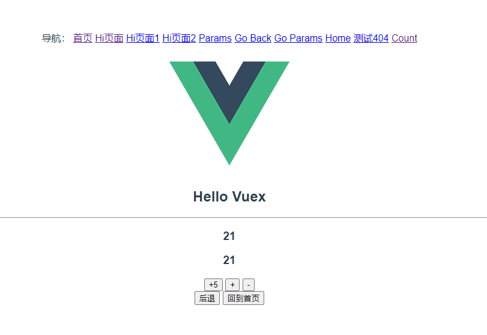

前面我们学习了怎么样读取state，那今天我们学习一下怎么样修改它。如何操作Mutations。
Vuex提供了commit方法来修改状态，我们粘贴出第一小节的代码内容，简单回顾一下，我们在button上的修改方法。
store.js文件：
这只是一个最简单的修改状态的操作，在实际项目中我们常常需要在修改状态时传值。 比如上边的例子，是我们每次只加1，而现在我们要通过所传的值进行相加。 其实我们只需要在Mutations里再加上一个参数，并在commit的时候传递就就可以了。我们来看具体代码：
现在store.js文件里给add方法加上一个参数n.
在Count.vue里修改按钮的commit( )方法传递的参数，我们传递5，意思就是每次加5.
这样两个简单的修改我们就完成了传值，我们可以在浏览器中实验一下了。
实际开发中我们也不喜欢看到$store.commit( )这样的方法出现，我们希望跟调用模板里的方法一样调用。
例如：@click=”reduce” 就和没引用vuex插件一样。 要达到这种写法，只需要简单的两部就可以了：
通过上边两部，我们已经可以在模板中直接使用我们的reduce或者add方法了，就像下面这样。